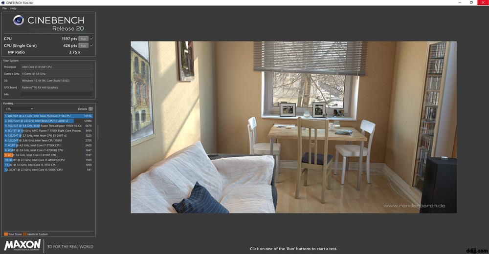
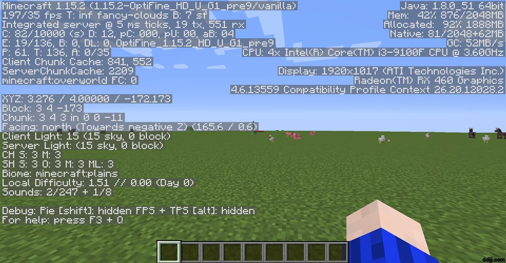

どうもddijjです 今回は自作PCを作りました!!!
スペックは
CPU...i3 9100F
グラフィックボード...RX560
マザーボード...MSI B365M PRO-VH M-ATX
メモリ...TEAM DDR4 2666Mhz PC4-21300 8GB
電源...玄人志向 NEXTシリーズ 80 PLUS Bronze 500W
SSD... WD 内蔵SSD 2.5インチ / 240GB / WD Green / SATA3.0 /
ケース...Thermaltake Versa H26 Black
CPUクーラー...Cooler Master Hyper H412R
やっぱり若干ストレージが足りない気がしますね
とりあえずCinebench R20を回しました

スコアは1597点でした
i7-4859HQと大体同じらしいですね
次にマインクラフトです

大体150~200FPSでした
本日も見ていただきありがとうございました